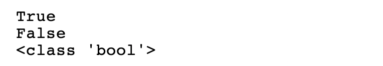
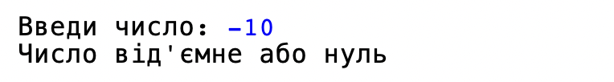
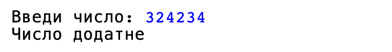
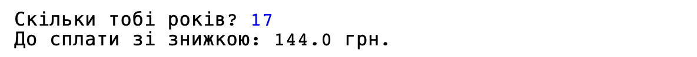
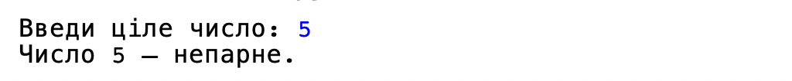
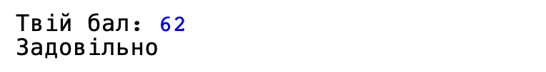
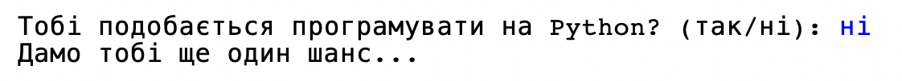
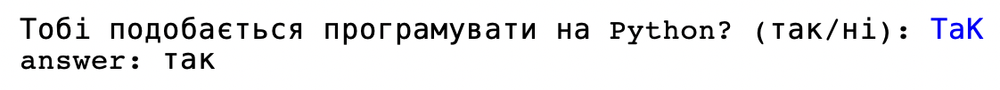
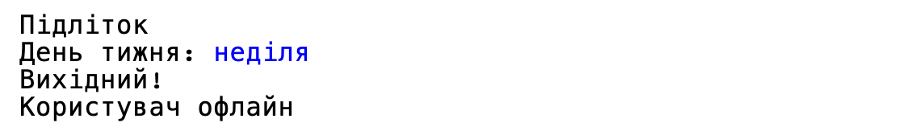

Оператори порівняння та if/else
Оператори порівняння та if/else
▶
Оператори порівняння
До цього уроку програма завжди виконувала всі рядки по черзі, зверху донизу. Сьогодні навчимо її приймати рішення — робити одне або інше залежно від умови. Але спочатку потрібен інструмент, щоб щось порівнювати.
В Python є шість операторів порівняння:
5 > 3 # True — 5 більше за 3
5 < 3 # False — 5 не менше за 3
5 >= 5 # True — 5 більше або дорівнює 5
5 <= 4 # False — 5 не менше або дорівнює 4
5 == 5 # True — 5 дорівнює 5
5 != 3 # True — 5 не дорівнює 3Результат порівняння — це новий тип даних: bool (логічний). Він має лише два значення: True або False.
print(10 > 3) # True
print(10 == 3) # False
print(type(True)) # <class 'bool'>
❗️ Важлива різниця:
- = — присвоєння (кладемо значення у змінну): вік = 12
- == — порівняння (перевіряємо, чи рівні): вік == 12
Перевір себе
❓ Питання: Що виведе цей код?
x = 7
print(x == 7)
print(x != 7)
print(x >= 10)if / else
Тепер використаємо порівняння, щоб програма могла вибирати, що робити:
if умова:
# виконується, якщо умова True
else:
# виконується, якщо умова FalseНаприклад:
number = int(input("Введи число: "))
if number > 0:
print("Число додатне")
else:
print("Число від'ємне або нуль")

❗️ Два правила синтаксису, які легко забути:
- Після if умова обов'язково стоїть двокрапка :
- Рядки всередині if/else обов'язково мають відступ (Tab або 4 пробіли) — саме по відступу Python розуміє, що належить до умови
Перевір себе
❓ Знайди помилку:
temperature = int(input("Температура: "))
if temperature > 30
print("Спекотно!")
else:
print("Нормально")
 Практика 1
Практика 1
▶
Завдання
Завдання 1: Квиток в кіно
Напиши програму для кінотеатру, яка запитує вік користувача. Базова вартість квитка — 180 гривень.
- Якщо користувачу 18 років або більше — він платить повну вартість.
- Якщо менше — користувач отримує знижку 20%.

Завдання 2: Парне чи непарне?
Напиши програму, яка запитує ціле число і виводить, парне воно чи непарне.

Додатково: А як перевірити, чи ділиться число на 3?
Завдання 3: Банкомат
У користувача на рахунку є 1000 гривень. Напиши програму, яка запитує його, скільки грошей він хоче зняти з рахунку.
- Якщо сума зняття менша або дорівнює балансу — програма має вивести "Операція успішна" і показати залишок на рахунку.
- Якщо коштів не вистачає — вивести "Помилка: недостатньо коштів" .
elif та порівняння рядків
▶
elif — кілька варіантів
if/else дає лише два варіанти: або/або. Якщо варіантів більше — використовуємо elif (скорочення від "else if"):
grade = int(input("Твій бал: "))
if grade >= 90:
print("Відмінно!")
elif grade >= 75:
print("Добре")
elif grade >= 60:
print("Задовільно")
else:
print("Треба підтягнутись")
Python перевіряє умови по черзі зверху донизу і виконує перший блок, умова якого виявилась True. Решта блоків пропускаються — навіть якщо їхні умови теж були б правдивими.
Перевір себе
❓ Питання: Що виведе програма з прикладу вище, якщо ввести 85? А якщо ввести 90?
Порівняння рядків
Порівнювати можна не лише числа, а й рядки:
answer = input("Тобі подобається програмувати на Python? (так/ні): ")
if answer == "так":
print("Чудово! 🐍")
elif answer == "ні":
print("Дамо тобі ще один шанс...")
else:
print("Будь ласка, відповідай 'так' або 'ні'")
❗️ Важливо: "Так" != "так" — Python чутливий до регістру. Щоб не залежати від того, як саме користувач надрукує слово, часто використовують .lower():
answer = input("Тобі подобається програмувати на Python? (так/ні): ")
answer = answer.lower()
print("answer:", answer)
.lower() перетворює весь введений текст на малі літери — тоді "ТАК", "Так" і "так" для програми будуть однаковими.
Перевір себе
❓ Питання: Навіщо потрібен блок else в прикладі вище — адже вже є і "так", і "ні"?
Практика 2
▶
Завдання
Завдання 4: Cвітлофор
Напиши програму, яка запитує колір світлофора і каже, що робити:
- "зелений" → "Можна йти!"
- "жовтий" → "Приготуйся!"
- "червоний" → "Стій!"
- інше слово → "Світлофор зламався або такого кольору немає."
Програма має розуміти слова незалежно від того, введені вони з великої чи маленької літери.
Завдання 5: Калькулятор
Напиши програму, яка по черзі запитує у користувача:
- Перше число
- Друге число
- Математичну операцію, яку потрібно з ними виконати (+, -, *, або /)
Залежно від введеного знаку, програма має порахувати і вивести результат. Якщо знак інший — вивести "Невідома операція".
Завдання 6: Стан води
Напиши програму, яка запитує у користувача температуру води і виводить, в якому вона стані: твердому (0 і менше), рідкому чи газоподібному (100 і більше).
Логічні оператори: and, or, not; Бібліотека random
▶
and, or, not
Іноді одного порівняння недостатньо — потрібно перевірити кілька умов одразу. Для цього є логічні оператори:
and — обидві умови мають бути True:
age = 14
if age >= 12 and age <= 17:
print("Підліток")or — достатньо, щоб хоча б одна умова була True:
day = input("День тижня: ").lower()
if day == "субота" or day == "неділя":
print("Вихідний!")
else:
print("Будній день")not — перевертає результат (True → False, False → True):
online = False
if not online:
print("Користувач офлайн")
Таблиця для запам'ятовування:
| A | B | A and B | A or B | not A |
|---|---|---|---|---|
| True | True | True | True | False |
| True | False | False | True | False |
| False | True | False | True | True |
| False | False | False | False | True |
Перевір себе
❓ Питання 1: Як одним рядком перевірити, чи число x знаходиться поза діапазоном від 1 до 10?
❓ Питання 2: Що виведе цей код?
x = 5
print(x > 3 and x < 10)
print(x < 3 or x > 10)
print(not x == 5)Бібліотека random — випадкові числа
Іноді програмі потрібен елемент випадковості — наприклад, щоб комп'ютер "загадав" число. Для цього є бібліотека random, яку, як і math, потрібно підключити на початку програми:
import randomСьогодні нам знадобиться лише одна функція з цієї бібліотеки: random.randint(a, b). Вона повертає випадкове ціле число від a до b включно:
number = random.randint(1, 6) # як кинути кубик: від 1 до 6
print(number) # кожен раз різний результат!❗️ Важливо: кожен раз при запуску програми результат буде іншим — це і є суть "випадковості".
Перевір себе
❓ Питання: Що виведе цей код?
import random
x = random.randint(1, 3)
print(x)
Практика 3
▶
Завдання
Завдання 7: Парк розваг
На екстремальні американські гірки пускають лише тих, кому вже є 12 років і чий зріст не менше 140 см.
Напиши програму, яка запитує вік та зріст. Якщо обидві умови виконуються — виведи "Проходь!", якщо хоча б одна ні — "На жаль, на цей атракціон не можна" .
Завдання 8: Пора року
Напиши програму, яка запитує номер місяця (від 1 до 12) і виводить пору року. Наприклад:
- 12 або 1 або 2 → "Зима ❄️"
Якщо ввести не число від 1 до 12 → "Такого місяця не існує".
Завдання 9: Чарівна куля
Напиши програму "Чарівна куля". Вона має просити користувача ввести будь-яке питання. Потім програма випадковим чином обирає число від 1 до 3.
- Якщо випало 1 → виводить "Так, безсумнівно!"
- Якщо 2 → "Ні, навіть не думай."
- Якщо 3 → "Можливо, спитай пізніше..."
Завдання 10: Гра "Вгадай число"
Напишемо міні-гру! Комп'ютер загадує випадкове число від 1 до 10. Гравець вводить свій варіант. Програма має вивести:
- "Правильно! 🎉" — якщо гравець вгадав.
- "Спробуй менше число..." — якщо гравець ввів більше число, ніж загадано.
- "Спробуй більше число..." — якщо гравець ввів менше число, ніж загадано.
Використай цикл while, щоб дати користувачу багато спроб вгадати:
# 1. загадай випадкове число (secret_number)
user_guess = 0 # початкове значення перед циклом, щоб не було помилки
while secret_number != user_guess:
# 2. запитай в користувача число (user_guess)
# 3. Перевір, вгадав чи не вгадав
Що робить while?
while (з англійської "поки") — це цикл. У цьому завданні він змушує код всередині (запит числа та перевірку) повторюватися знову і знову, поки число користувача не дорівнює (!=) загаданому числу. Як тільки гравець введе правильне число, умова стане хибною і гра завершиться!